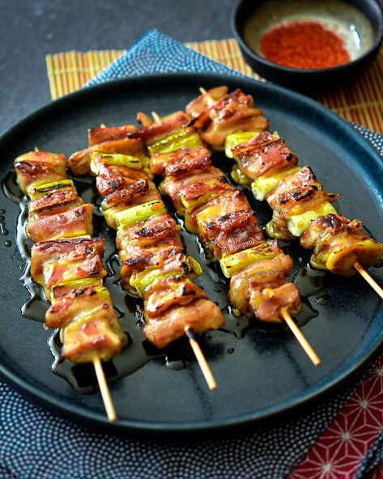
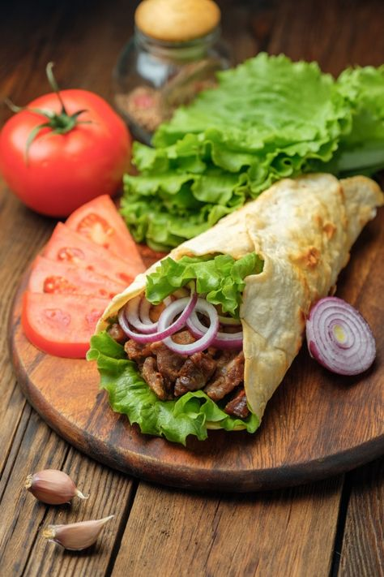
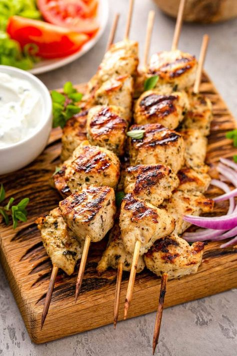
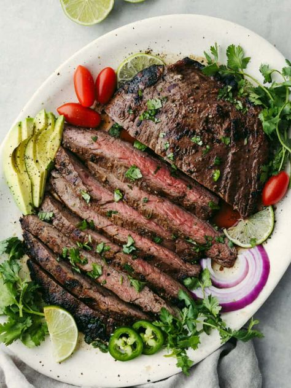
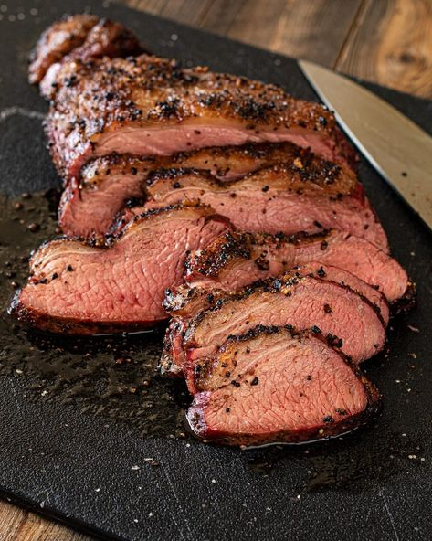
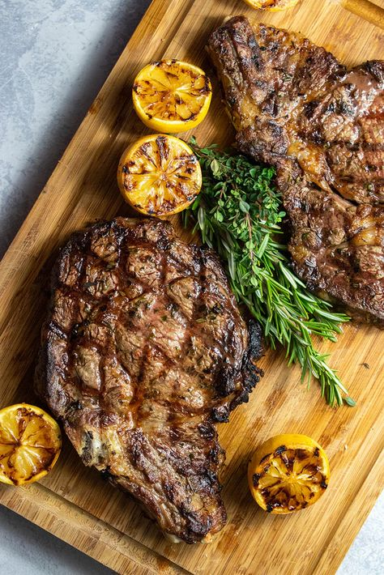
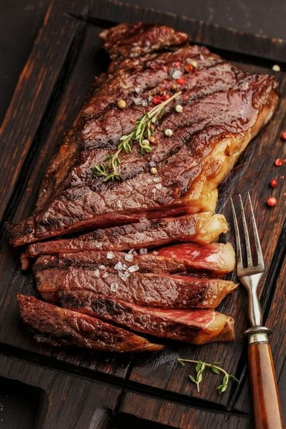
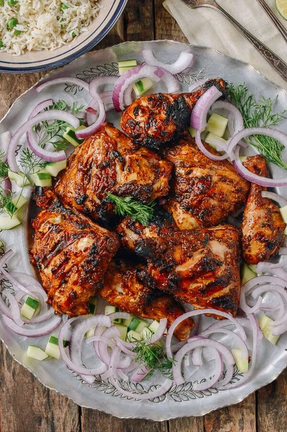
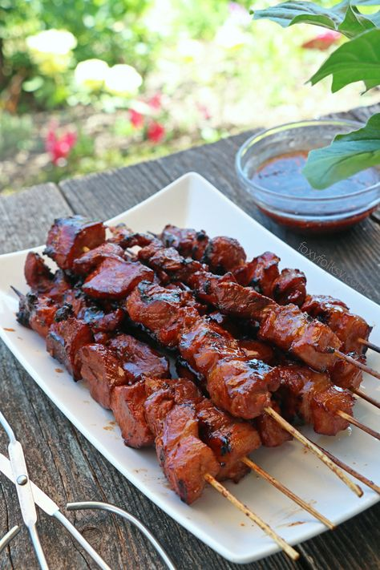
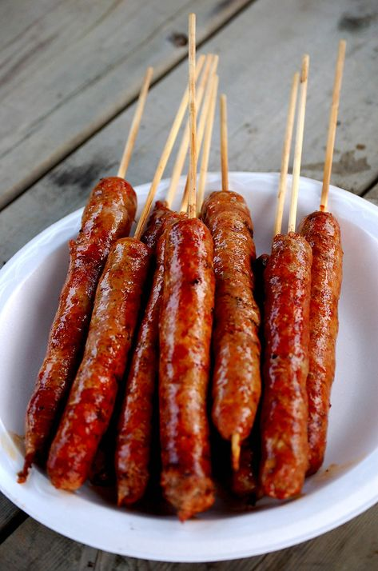

1. Resep Yakitori

Bahan:
- 500 gram daging ayam (paha atau dada), potong dadu
- 1/2 batang bawang bombay, iris tipis
- 1 paprika hijau, iris tipis
- 1 paprika merah, iris tipis
- Kecap manis
- Saus hoisin
- Garam
- Lada
Cara Membuat:
- Campurkan kecap manis, saus hoisin, minyak wijen, garam, dan lada dalam mangkuk kecil.
- Masukkan daging ayam ke dalam rendaman dan aduk hingga terlapisi rata.
- Tusuk daging ayam secara berselang-seling dengan bawang bombay, paprika hijau, dan paprika merah.
- Panaskan panggangan atau grill dengan api sedang.
- Panggang yakitori selama 5-7 menit per sisi, atau hingga matang.
- Sajikan dengan saus tambahan.
2. Resep Kebab

Bahan:
- 500 gram daging domba atau sapi, potong dadu
- 1 bawang bombay, iris tipis
- 1 paprika hijau, iris tipis
- 1 paprika merah, iris tipis
- 1 tomat, potong dadu
- 1/2 cangkir yoghurt Yunani
- 1 sendok makan minyak zaitun
- 1 sendok teh jinten bubuk
- 1/2 sendok teh garam
- 1/4 sendok teh lada
- Roti pita
Cara Membuat:
- Campurkan daging domba atau sapi, bawang bombay, paprika hijau, paprika merah, tomat, yoghurt Yunani, minyak zaitun, jinten bubuk, garam, dan lada dalam mangkuk besar.
- Aduk hingga tercampur rata dan diamkan selama minimal 30 menit.
- Tusuk daging ke dalam tusuk sate.
- Panaskan panggangan atau grill dengan api sedang.
- Panggang kebab selama 5-7 menit per sisi, atau hingga matang.
- Sajikan kebab dengan roti pita dan saus favorit Anda.
3. Resep Souvlaki

Bahan:
- 500 gram daging babi, potong dadu
- 1 bawang bombay, iris tipis
- 1 paprika hijau, iris tipis
- 1 paprika merah, iris tipis
- 1/2 cangkir jus lemon
- 1/4 cangkir minyak zaitun
- 1 sendok makan oregano kering
- 1 sendok teh garam
- 1/2 sendok teh lada
- Roti pita
- Saus tzatziki (opsional)
Cara Membuat:
- Campurkan daging babi, bawang bombay, paprika hijau, paprika merah, jus lemon, minyak zaitun, oregano kering, garam, dan lada dalam mangkuk besar.
- Aduk hingga tercampur rata dan diamkan selama minimal 30 menit.
- Tusuk daging ke dalam tusuk sate.
- Panaskan panggangan atau grill dengan api sedang.
- Panggang sovlaki selama 5-7 menit per sisi, atau hingga matang.
- Sajikan sovlaki dengan roti pita dan saus tzatziki (opsional).
4. Resep Carne Asada

Bahan:
- 1 kilogram daging flank steak, potong tipis
- 1/4 cangkir jus jeruk nipis
- 1/4 cangkir minyak zaitun
- 1 sendok makan bubuk cabai
- 1 sendok makan jinten bubuk
- 1 sendok teh oregano kering
- 1/2 sendok teh garam
- 1/4 sendok teh lada
- Tortilla jagung
- Saus guacamole (opsional)
- Salsa (opsional)
Cara Membuat:
- Campurkan jus jeruk nipis, minyak zaitun, bubuk cabai, jinten bubuk, oregano kering, garam, dan lada dalam mangkuk kecil.
- Masukkan daging steak ke dalam rendaman dan aduk hingga terlapisi rata.
- Diamkan selama minimal 30 menit.
- Panaskan panggangan atau grill dengan api sedang-tinggi.
- Panggang daging steak selama 2-3 menit per sisi, atau hingga matang sesuai selera.
- Sajikan carne asada dengan tortilla jagung, saus guacamole (opsional), dan salsa (opsional).
5. Resep Picanha

Bahan:
- 1 kg Picanha (daging sapi bagian rump cap)
- Garam secukupnya
- Lada hitam secukupnya
- Minyak zaitun secukupnya
Cara Membuat:
- Potong picanha menjadi steak setebal 2-3 cm.
- Bumbui steak dengan garam dan lada hitam secukupnya.
- Panaskan minyak zaitun dalam wajan dengan api besar.
- Masak steak selama 3-4 menit per sisi untuk tingkat kematangan medium rare.
- Angkat steak dan tiriskan minyaknya.
- Istirahatkan steak selama 5 menit sebelum disajikan.
6. Resep Fiorentina Steak

Bahan:
- 1 kg Fiorentina steak (daging sapi bagian T-bone)
- Garam secukupnya
- Lada hitam secukupnya
- Minyak zaitun secukupnya
- Mentega secukupnya
Cara Membuat:
- Potong Fiorentina steak menjadi steak setebal 2-3 cm.
- Bumbui steak dengan garam dan lada hitam secukupnya.
- Panaskan minyak zaitun dalam wajan dengan api besar.
- Masak steak selama 3-4 menit per sisi untuk tingkat kematangan medium rare.
- Tambahkan mentega ke dalam wajan dan siramkan steak dengan mentega cair selama 1 menit.
- Angkat steak dan tiriskan minyaknya.
- Istirahatkan steak selama 5 menit sebelum disajikan.
7. Resep Asado

Bahan:
- 1 kg daging sapi (bisa bagian sirloin, rib eye, atau rump)
- Garam secukupnya
- Lada hitam secukupnya
- Minyak zaitun secukupnya
- Bawang bombay, iris tipis secukupnya
- Paprika, iris tipis secukupnya
- Sosis, potong-potong secukupnya
Cara Membuat:
- Nyalakan api barbeque.
- Bumbui daging sapi dengan garam dan lada hitam secukupnya.
- Panggang daging sapi di atas api barbeque selama 15-20 menit per sisi untuk tingkat kematangan medium.
- Panggang bawang bombay, paprika, dan sosis di atas api barbeque selama 10-15 menit.
- Sajikan daging sapi, bawang bombay, paprika, dan sosis bersama dengan saus barbeque favorit Anda.
r
8. Resep Tandoori Chicken

Bahan:
- 1 kg ayam, potong-potong
- 1 cangkir yogurt
- 1 sendok makan pasta tandoori
- 1 sendok makan jahe parut
- 1 sendok makan bawang putih parut
- 1/2 sendok teh garam
- 1/4 sendok teh lada hitam
- Minyak zaitun secukupnya
Cara Membuat:
- Campurkan yogurt, pasta tandoori, jahe parut, bawang putih parut, garam, dan lada hitam dalam mangkuk besar.
- Masukkan potongan ayam ke dalam campuran yogurt dan aduk hingga terlapisi rata.
- Marinasi ayam selama minimal 30 menit di dalam kulkas.
- Panaskan minyak zaitun dalam wajan dengan api sedang.
- Masak ayam hingga matang dan berwarna cokelat keemasan.
- Sajikan tandoori chicken dengan nasi dan saus favorit Anda.
9. Resep Satay

Bahan:
- 500 gram daging ayam, potong-potong
- 1/2 cangkir kecap manis
- 2 sendok makan saus kacang
- 1 sendok makan madu
- 1 sendok makan air jeruk nipis
- 1 sendok makan bawang putih parut
- 1/2 sendok teh garam
- 1/4 sendok teh lada hitam
- Tusuk sate
Cara Membuat:
- Campurkan kecap manis, saus kacang, madu, air jeruk nipis, bawang putih parut, garam, dan lada hitam dalam mangkuk besar.
- Masukkan potongan ayam ke dalam campuran bumbu dan aduk hingga terlapisi rata.
- Marinasi ayam selama minimal 30 menit di dalam kulkas.
- Tusuk ayam pada tusuk sate.
- Panggang sate di atas api barbeque atau wajan dengan api sedang hingga matang.
- Sajikan sate ayam dengan saus kacang dan lontong.
10. Resep Merguez

Bahan:
- 500 gram daging domba atau sapi giling (pilihlah daging yangberlemak agar marguez lebih juicy)
- 1 bawang merah besar, cincang halus
- 2 siung bawang putih, cincang halus
- 1 sdm jahe parut
- 1 sdt ketumbar bubuk
- 1 sdt jintan bubuk
- 1/2 sdt jinten putih bubuk
- 1/2 sdt paprika bubuk
- 1/4 sdt bubuk cabai merah (opsional)
- 1/4 sdt kunyit bubuk
- 1/2 sdt garam
- 1/4 sdt lada hitam
- 1/4 sdt gula
- 1/4 cangkir daun ketumbar segar, cincang halus (opsional)
- Minyak zaitun untuk menumis
Cara Membuat:
- Membumbui daging: Dalam mangkuk besar, campurkan daging giling dengan bawang merah, bawang putih, jahe, ketumbar bubuk, jintan bubuk, jinten putih bubuk, paprika bubuk, bubuk cabai merah (jika menggunakan), kunyit bubuk, garam, lada hitam, dan gula. Aduk rata dengan tangan hingga semua bahan tercampur.
- Menambahkan daun ketumbar: Masukkan daun ketumbar cincang (jika menggunakan) dan aduk kembali. Tutup mangkuk dan diamkan dalam kulkas selama minimal 30 menit agar bumbu meresap.
- Membentuk marguez: Ambil segenggam adonan daging dan bentuk menjadi sosis memanjang. Anda dapat menggunakan alat bantu seperti corong sosis untuk memudahkan proses ini.
- Memasak marguez: Panaskan minyak zaitun dalam wajan dengan api sedang. Masukkan marguez dan masak hingga berwarna cokelat keemasan dan matang sempurna di semua sisi.
- 5. Menyajikan marguez: Sajikan marguez panas dengan roti pita, nasi, atau salad.